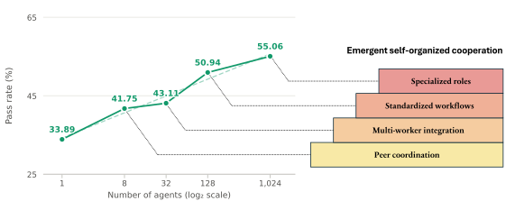
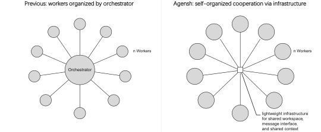
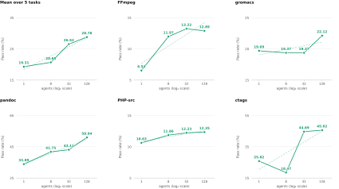

Agensh is a scalable, self-organized multi-agent harness without a central orchestrator.
Concurrent workers gather context, claim sub-tasks, share findings, verify, and merge progress asynchronously
through a lightweight agentic organization infrastructure, consisting of a shared workspace, a message interface, and shared context.
1 → 1,024agents cooperating
on one shared repository
on one shared repository
33.89% → 55.06%final test pass rate on
(6h, no Internet)
pandoc(6h, no Internet)
+62%pass rate relative gain,
1 → 1,024 agents on
1 → 1,024 agents on
pandoc
pandoc from scratch under a 6h budget without Internet access.
Final test-pass rate rises from 33.89% for 1 agent to 55.06% for 1,024 agents. As the organization grows, emergent self-organized
cooperation gradually expands from peer coordination to multi-worker integration, standardized workflows, and specialized roles.Loading replay…
How Agensh Scales

Main Results
With the same model, underlying Copilot harness, and 6h budget, scaling self-organized concurrent workers improves both the final score and the time needed to achieve a given test-pass rate.

FFmpeg, gromacs,
pandoc, PHP-src, ctags) under a 6h budget. Mean final test-pass rate rises from 19.31% for 1 agent
to 28.78% for 128 agents.
pandoc, 128 agents exceed 30% at the 30-minute checkpoint,
while 32 and 8 agents first do so at 60 and 90 minutes.